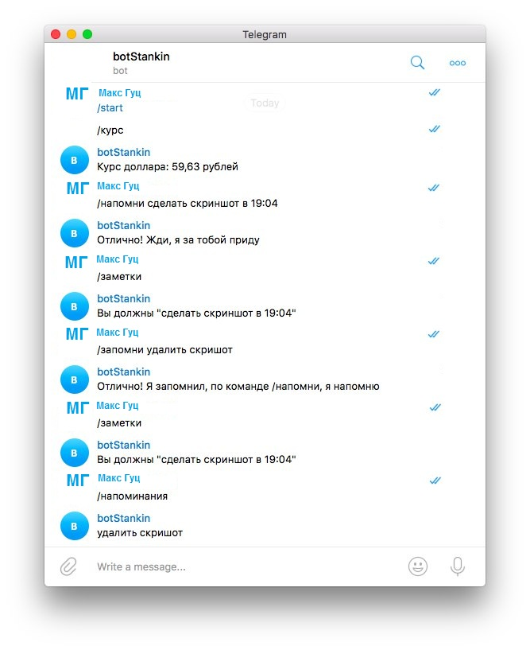
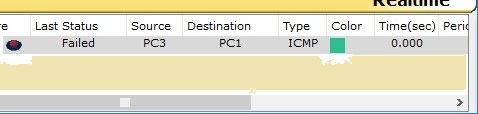

Необходимо выполнить следующие задачи:
-
Лабораторная работа №1
Экосистема разработки программ с открытым кодом":Создание персональной страницы-отчета на github и работа с git
-
Лабораторная работа №2 "Разработка простого веб-приложения":
Проектирование и разработка индивидуального или коллективного веб-приложения (SPA) с использованием html,css,js + json,xml
-
Лабораторная работа №3 "Настройка локальной сети передачи данных":
Настройка коммутаторов и маршрутизаторов
-
Самооценка прохождения теста по инновациям, формулировка одного вопроса по теме "Интернет-технологии" в одной из форм, встречающихся в тесте (выбор одного, выбор многих, упорядочивание, соответствие)
Лабораторная работа #1
Задачи:
-
Первым шагом является непосредственно регистрация на GitHub.
-
Следующим шагом необходимо создать персональную веб страницу-отчет с использованием html, css, js.
-
Загрузить персональную веб страницу-отчет в репозиторий ИДМ-17 по курсу "Интернет-технологии" на GitHub.
Лабораторная работа #2
Задачи:
-
Сперва была сформирована команда для разработки веб-приложения (SPA). Далее были распределены роли. Ссылка на команду представлена ниже.
-
Далее нашей командой был разработан макет страницы веб-приложения. Ниже представлена ссылка на макет веб-приложения
Краткое описание работы веб-приложения

Для начала понадобится установить Node.js
Затем необходимо скачать репозиторий:
git clone https://github.com/dreamteamstankin/project
Установка зависимостей:
npm install
После установки нужно запустить работу сервера, для того, чтобы бот понимал запросы и отвечал пользователю, это можно сделать стандартной командой
node app.js
либо nodemon, который отслеживает изменений файла и перезапускает при необходимости сервер
nodemon app.js
Команды, которые выполняет бот:
/напомни %заметка% в hh:mm (при установке времени )
/заметки (вывод всех заметок с заданным временем)
/удалить (удаление заметок с заданным временем)
/курс (курс доллара с yandex.ru)
/запомни (запись заметки без временного ограничения)
/напоминания (вывод всех заметок без временного ограничения)
/удалитьнапоминания (удаление всех заметок без временного ограничения)
-
Затем был прописан js функционал и реализовать возможность чтения json. Ниже приведены ссылки на материал.
Результат:
Лабораторная работа #3
Ход работы:1. Первым делом нужно рассчитать IP адрес.
2. Далее настроим адресацию на добавленных компьютерах (разместим два компьютера и коммутатор. Настроим между ними адресацию).
3. Выполняем проверку работоспособности созданой сети.

4. Добавляем на рабочее поле новый коммутатор с двумя компьютерами.
5. Настроим адресацию из другой подсети.

6. Соединяем коммутаторы между собой и опять же проверяем работоспособность сети.
7. Настраиваем интерфейсы маршрутизатора. Проверяем работоспособность.

8. Проверяем работоспособность сети. Отправляем сообщение из А в В, а далее из В в С.

9. Настройка статической маршрутизации осуществлялась с помощью команд:
show ip route – выводит таблицу маршрутизации;
show ip protocols – выводит расширенную информацию об используемых протоколах маршрутизации;
ip route [сеть назначения] [маска] [маршрут] – добавляет в таблицу маршрутизации статический маршрут до указанной сети назначения.
Banner motd [баннер] – определяет баннерное сообщение.
Все задачи, поставленные в лабораторной работе, выполнены.
Вопрос для экзамена
Трехуровневая архитектура - архитектурная модель программного комплекса, предполагающая наличие в нём трех компонентов: ...
*Правильный ответ: клиента, сервера приложений, сервера баз данных.